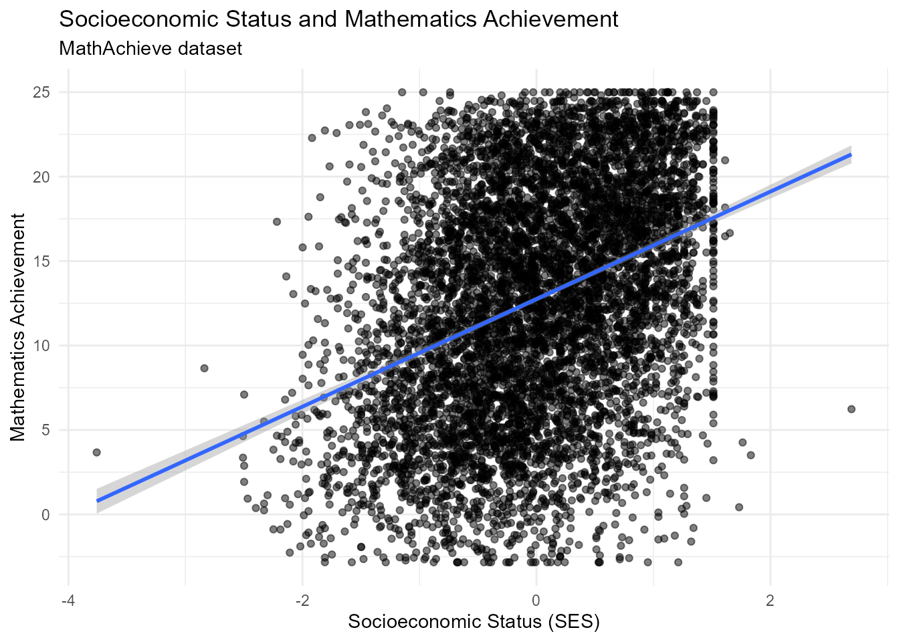

library(eduResearchR)
library(dplyr)
#>
#> Attaching package: 'dplyr'
#> The following objects are masked from 'package:stats':
#>
#> filter, lag
#> The following objects are masked from 'package:base':
#>
#> intersect, setdiff, setequal, union
library(ggplot2)
library(knitr)Overview
eduResearchR is a curated collection of educational
datasets designed to support empirical research, quantitative data
analysis, statistical modeling, data visualization, and teaching in the
field of education.
The package brings together datasets covering different dimensions of educational research, including student performance, schools, classrooms, teachers, educational trajectories, higher education, educational assessment, and international education.
Getting Started
To begin using eduResearchR, load the package and access
any of its included datasets.
For example, the following code loads and displays the first five
observations of the STARplus dataset:
data("STARplus")
head(STARplus, 5)
#> stdntid gender race birthmonth birthday birthyear read_yr1 math_yr1
#> 1 10000 male white 1 22 1979 516 578
#> 2 10001 male white 2 20 1980 NA NA
#> 3 10002 female black 7 21 1979 577 570
#> 4 10003 male white 5 28 1980 451 507
#> 5 10004 female black 1 2 1980 579 584
#> gktreadss gktmathss gktlistss gkwordskillss g1schid g1tchid g1classsize
#> 1 NA NA NA NA 170295 17029507 23
#> 2 NA NA NA NA NA NA NA
#> 3 NA NA NA NA NA NA NA
#> 4 NA NA NA NA 257899 25789906 22
#> 5 NA NA NA NA NA NA NA
#> g1treadss g1tmathss g1tlistss g1wordskillss g1readbsraw g1mathbsraw
#> 1 516 578 601 493 25 43
#> 2 NA NA NA NA NA NA
#> 3 NA NA NA NA NA NA
#> 4 451 507 584 436 20 42
#> 5 NA NA NA NA NA NA
#> g1readbsobjpct g1mathbsobjpct g2schid g2tchid g2classsize g2treadss
#> 1 75 100 170295 17029510 23 547
#> 2 NA NA NA NA NA NA
#> 3 NA NA NA NA NA NA
#> 4 50 100 257899 25789915 22 562
#> 5 NA NA 244796 24479610 19 579
#> g2tmathss g2tlistss g2wordskillss g2readbsraw g2mathbsraw g2readbsobjpct
#> 1 577 572 547 32 56 93
#> 2 NA NA NA NA NA NA
#> 3 NA NA NA NA NA NA
#> 4 563 581 593 44 43 72
#> 5 584 572 560 40 59 98
#> g3schid g3tchid g3classsize g3treadss g3tmathss g3tlangss g3tlistss
#> 1 170295 17029514 26 583 586 606 584
#> 2 NA NA NA NA NA NA NA
#> 3 205492 20549213 23 577 570 600 603
#> 4 257899 25789916 21 614 614 606 652
#> 5 244796 24479613 28 616 624 627 597
#> g3socialsciss g3spellss g3vocabss g3mathcomputss g3mathnumconcss g3mathapplss
#> 1 613 591 585 570 588 602
#> 2 NA NA NA NA NA NA
#> 3 559 576 580 562 567 579
#> 4 632 581 651 619 588 632
#> 5 609 645 576 637 620 613
#> g3wordskillss g3readbsraw g3mathbsraw g3readbsobjpct g3mathbsobjpct
#> 1 584 28 45 80 80
#> 2 NA NA NA NA NA
#> 3 581 22 45 30 73
#> 4 591 30 55 80 93
#> 5 584 37 54 100 100
#> dob dobNA grade_at_entry school_at_entry cond_at_entry
#> 1 1979-01-22 FALSE 1 170295 regular+aide
#> 2 1980-02-20 FALSE k 169229 regular+aide
#> 3 1979-07-21 FALSE 3 205492 regular+aide
#> 4 1980-05-28 FALSE 1 257899 regular
#> 5 1980-01-02 FALSE 2 244796 regular+aideAvailable Datasets
The first version of eduResearchR includes 15 curated
educational datasets organized into six major areas of research.
Students and Performance
STARplus— Student performance, demographic characteristics, grade, school, classroom type, and longitudinal information.MathAchieve— Student characteristics, socioeconomic status, school, and mathematics achievement.
School, Classroom and Teachers
classroom— Mathematics achievement, socioeconomic status, teacher experience, and teacher mathematical knowledge.schools— Student and school characteristics, socioeconomic status, and mathematics achievement.apipop— Student performance and institutional characteristics of California schools.CASchools— School performance, teachers, expenditures, income, English learners, and reading and mathematics outcomes.
Educational Trajectory
NELS— Longitudinal information about students, families, schools, motivation, aspirations, absenteeism, and academic achievement.schoolProgram— Student characteristics, socioeconomic status, school type, educational program, and academic performance.
Higher Education
CollegeDistance— Educational attainment and factors such as parental education, income, distance to college, and tuition.school— Institutional characteristics, enrollment, costs, student aid, and outcomes of higher education institutions.STUDENT— College GPA and academic and personal characteristics of university students.FirstYearGPA— First-year college GPA and characteristics related to the transition from secondary to higher education.
Exploring a Dataset
To illustrate how eduResearchR can be used for
quantitative educational research, we will work with the
MathAchieve dataset.
This dataset contains information related to mathematics achievement, socioeconomic status, student characteristics, and schools.
data("MathAchieve")
head(MathAchieve, 5)
#> School Minority Sex SES MathAch MEANSES
#> 1 1224 No Female -1.528 5.876 -0.428
#> 2 1224 No Female -0.588 19.708 -0.428
#> 3 1224 No Male -0.528 20.349 -0.428
#> 4 1224 No Male -0.668 8.781 -0.428
#> 5 1224 No Male -0.158 17.898 -0.428Variables in MathAchieve
The MathAchieve dataset contains the following
variables:
variables <- data.frame(
Variable = names(MathAchieve)
)
knitr::kable(
variables,
caption = "Variables included in the MathAchieve dataset"
)| Variable |
|---|
| School |
| Minority |
| Sex |
| SES |
| MathAch |
| MEANSES |
The main variables included in the dataset are:
-
School: school identifier. -
Minority: minority status of the student. -
Sex: sex of the student. -
SES: socioeconomic status of the student. -
MathAch: mathematics achievement score. -
MEANSES: mean socioeconomic status of the school.
Visualization
One possible research question using MathAchieve is:
Is there a relationship between students’ socioeconomic status and their mathematics achievement?
The following graph visualizes the relationship between
SES and MathAch:
ggplot(MathAchieve, aes(x = SES, y = MathAch)) +
geom_point(alpha = 0.5) +
geom_smooth(method = "lm", se = TRUE) +
labs(
title = "Socioeconomic Status and Mathematics Achievement",
subtitle = "MathAchieve dataset",
x = "Socioeconomic Status (SES)",
y = "Mathematics Achievement"
) +
theme_minimal()
#> `geom_smooth()` using formula = 'y ~ x'
The graph allows researchers to visually examine whether differences in socioeconomic status are associated with differences in mathematics achievement.
Conclusion
eduResearchR provides a curated collection of 15
educational datasets that can be used to explore different research
questions involving students, classrooms, teachers, schools, educational
trajectories, higher education, educational assessment, and
international education.
By bringing these datasets together in a single R package,
eduResearchR facilitates access to educational data for
statistical analysis, data visualization, teaching, empirical research,
and quantitative educational studies.
The package therefore provides a practical starting point for researchers and students who want to move from educational questions to evidence-based analysis using R.